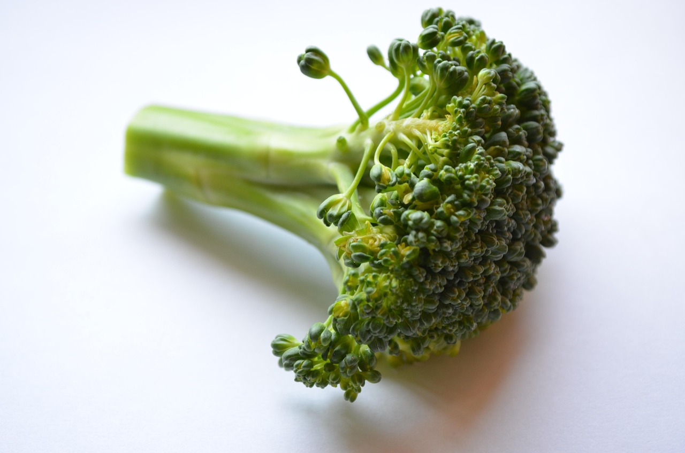

Home
Broccoli

A quick and healthy side dish you won't be able to resist.
Ingredients
You will need:
- 1 cup broccoli florets
- 1 teaspoon lemon pepper
- 1 teaspoon garlic powder
- 1 teaspoon salt
- 1 teaspoon ground black pepper
- 1/3 cup extra virgin olive oil
- 1/3 cup parmesan cheese, grated
Steps
- Gather all ingredients.
- Coat the bottom of a small skillet with the olive oil and set it over a medium heat.
- Season the broccoli florets with the lemon pepper, garlic powder, salt, and black pepper, then add to the skillet once the oil begins simmering.
- Cook for about 12 minutes, stirring occasionally. Try to maintain an even browning across the broccoli by flipping.
- Sprinkle the parmesan cheese over the broccoli.
- Enjoy!
Image sourced from PDPics via Pixabay.